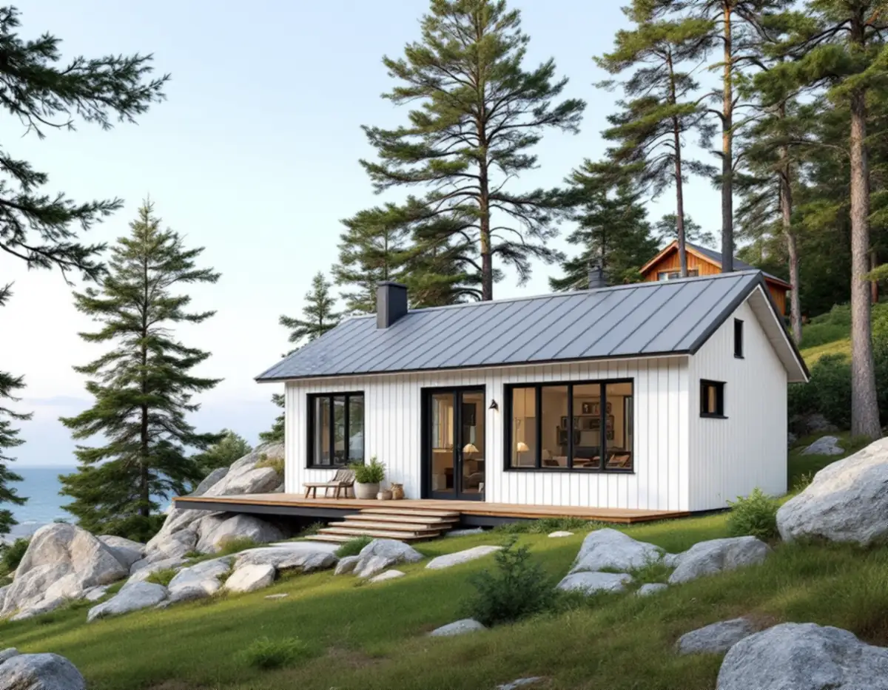
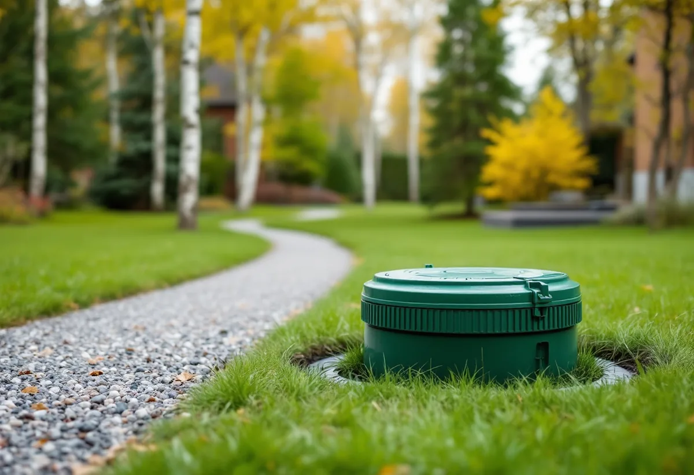
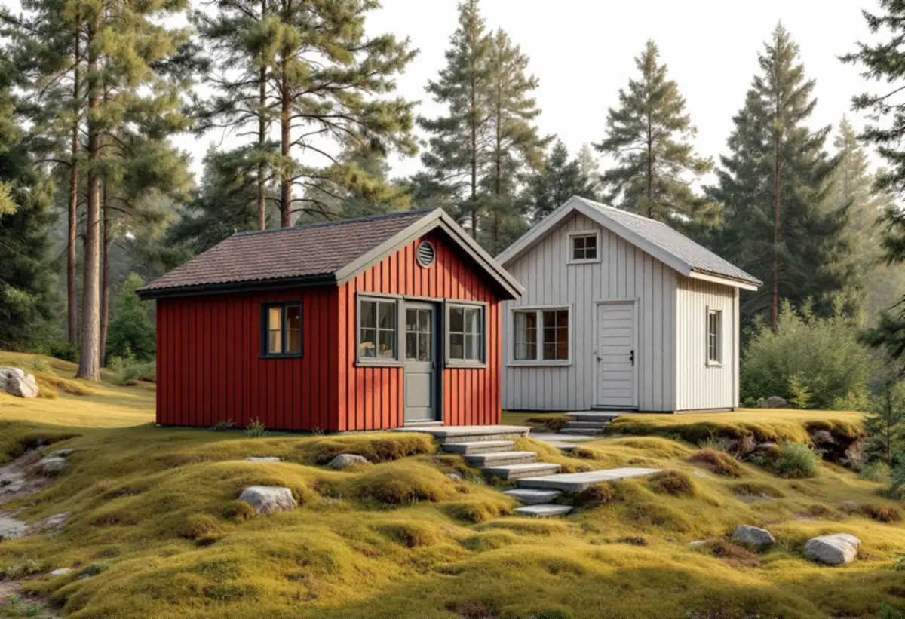

Platsbesök
Vi mäter befintliga byggnader och räknar ut vad som är kvar i potten.

Ett gästhus i trädgården, en bostad åt en vuxen son eller dotter eller ett hus att hyra ut – på Lidingö börjar frågan ofta med vad som redan står på tomten och hur avloppet går.
Beskriv jobbet kort.
Något blev fel. Kontrollera uppgifterna eller ring 08 12 410 276.
Vi tittar på jobbet på plats innan du får offert.
Du ser vad som ingår och vad det kostar.
Vi drar av ROT direkt och sköter ansökan.
Geal Entreprenad AB, Bromma. Org.nr 559303-7566.

Geal Entreprenad AB bygger komplementbostadshus nyckelfärdigt och går igenom tomten med dig innan något ritas.
Lidingö stad beskriver en gemensam ”pott” för lovfria komplementbyggnader och komplementbostadshus på varje tomt: 45 kvadratmeter inom detaljplan och 65 kvadratmeter utanför. Tidigare uppförda attefallshus och friggebodar räknas in i potten. Ett nytt hus får dessutom vara högst 30 kvadratmeter och fyra meter i nock inom detaljplan, och det ska vara mindre än det hus det kompletterar. Ett komplementbostadshus får bara byggas till ett en- eller tvåbostadshus.
På många tomter står redan ett förråd, en gäststuga eller ett garage. Vi mäter deras byggnadsarea vid platsbesöket och räknar fram hur stort det nya huset kan bli utan bygglov. Står huset närmare gränsen än 4,5 meter behövs grannens skriftliga medgivande. Staden påpekar också att det är viktigt att ett lovfritt hus placeras rätt i förhållande till tomtgränserna och har rätt storlek och höjd.

Själva uppförandet av ett lovfritt komplementbostadshus ska inte anmälas till byggnadsnämnden, skriver staden. Men ska huset få ventilation, vatten, avlopp, eldstad, rökkanal eller imkanal ska det anmälas innan installationen görs. I praktiken gäller det nästan varje hus som ska bli en riktig bostad med kök och badrum.
Vi tar fram planritning, VA-ritning och förslag till kontrollplan till anmälan, och vi börjar inte med installationerna förrän startbeskedet har kommit. Vill du ha ett beslut på hela huset kan du i stället söka frivilligt bygglov. Staden beskriver det som ett sätt att vara säker på att det som byggs uppfyller lagens krav.
På Lidingö finns enligt staden cirka 7 150 småhus. De allra flesta är anslutna till det kommunala nätet, och avloppsvattnet går till Käppalaverket. Cirka 50 fastigheter har fortfarande eget vatten och avlopp. Staden ansvarar för avloppsnätet fram till tomtgränsen. Innanför gränsen är ledningarna fastighetsägarens.
Där marken ligger lågt eller ledningarna inte kan grävas tillräckligt djupt trycks avloppet fram av en LTA-pump. Staden sköter pumpen om det finns ett gällande avtal, ett larm med separat säkring, en isolerad lucka och minst 1,5 meter fri yta runt enheten. Ledningarna klarar bara spillvatten, och avfallskvarnar får inte anslutas. Har din fastighet en LTA-enhet frågar vi staden hur det nya huset ska kopplas in innan avloppet ritas.
Ligger fastigheten inom ett kulturhistoriskt värdefullt område krävs bygglov för att uppföra, flytta eller utöka en komplementbyggnad eller ett komplementbostadshus. Lidingös kulturmiljöprogram från 2024 pekar ut områden, inte enskilda hus, och alla utpekade områden finns i stadens webbkarta. Programmet är ett kunskapsunderlag och påverkar inte byggrätten i detaljplanen.
Staden har också äldre byggnadsinventeringar, från 1970- och 1980-talen och från 2013–2015, och via kundcenter kan du be att få ta del av beskrivningar som finns för din fastighet. De är bra att ha när huset ska ritas så att det passar till villan. Hur större ombyggnader och tillbyggnader prövas beskrivs under tillbyggnad på Lidingö, och byggprojekt i stort under byggföretag på Lidingö. Måtten och paragraferna finns i reglerna för attefallshus.
Vi mäter befintliga byggnader och räknar ut vad som är kvar i potten.
Detaljplan, kulturmiljö och avståndet till gränserna kontrolleras.
Vi tar reda på om fastigheten har självfall, LTA-pump eller eget avlopp.
Ventilation, vatten, avlopp och imkanal anmäls innan installationerna görs.
Grund, stomme, tak och installationer fram till nyckelfärdigt.
Huset används först när slutbeskedet har kommit.
Skatteverket räknar upp arbeten som inte ger rotavdrag på ett småhus, bland annat att bygga ett helt nytt hus, en friggebod, ett garage eller en liknande fristående byggnad, och att skriva bygglovshandlingar eller anlita en arkitekt. Ett komplementbostadshus är en ny fristående byggnad, så kostnadsförslaget räknas utan avdrag.
Husets storlek och planlösning, kök och badrum, grund på berg eller i en sluttning, hur avloppet ska kopplas in och hur material kan köras fram på en kuperad tomt. Efter ett gratis platsbesök får du ett skriftligt kostnadsförslag.
Komplementbostadshus på tomten.
Attefallshus →Takbyte, takbesiktning och plåtarbeten.
Takläggare på Lidingö →Brevik, Mölna och Käppala.
Takrenovering på Lidingö →Villastad, källarbadrum och gästhus.
Badrumsrenovering på Lidingö →Villastäder, radhusbyar och berg.
Byggföretag på Lidingö →Värdefulla hus, kulör och bidrag.
Fasadmålning på Lidingö →Radhus, villor och putsfasader på Lidingö.
Fasadrenovering på Lidingö →Villastäderna och Brevik på Lidingö.
Fönsterbyte på Lidingö →Fönster i utpekade kulturmiljöer.
Fönsterrenovering på Lidingö →Souterrängvillor, radhus och äldre villor på Lidingö.
Golvläggare på Lidingö →Slipa och behandla trägolv i kök och hall.
Golvslipning på Lidingö →Villastäder, souterräng och radhusbyar.
Köksrenovering på Lidingö →Villastäder, radhusbyar och stugor på Lidingö.
Målare på Lidingö →Plåt i vind och värdefulla miljöer.
Plåtslagare på Lidingö →Verandor, trappor och dörrar.
Snickare på Lidingö →Nytt material, k-märkning och byggnadsminnen.
Takbyte på Lidingö →Ny tapet med hänsyn till huset.
Tapetsering på Lidingö →Webbkartan, programmet och frivilligt lov.
Tillbyggnad på Lidingö →Behåll stommen, bygg om resten.
Totalrenovering på Lidingö →Eller ring 08 12 410 276, mån–fre 08–17.
Beskriv jobbet kort.
Något blev fel. Kontrollera uppgifterna eller ring 08 12 410 276.